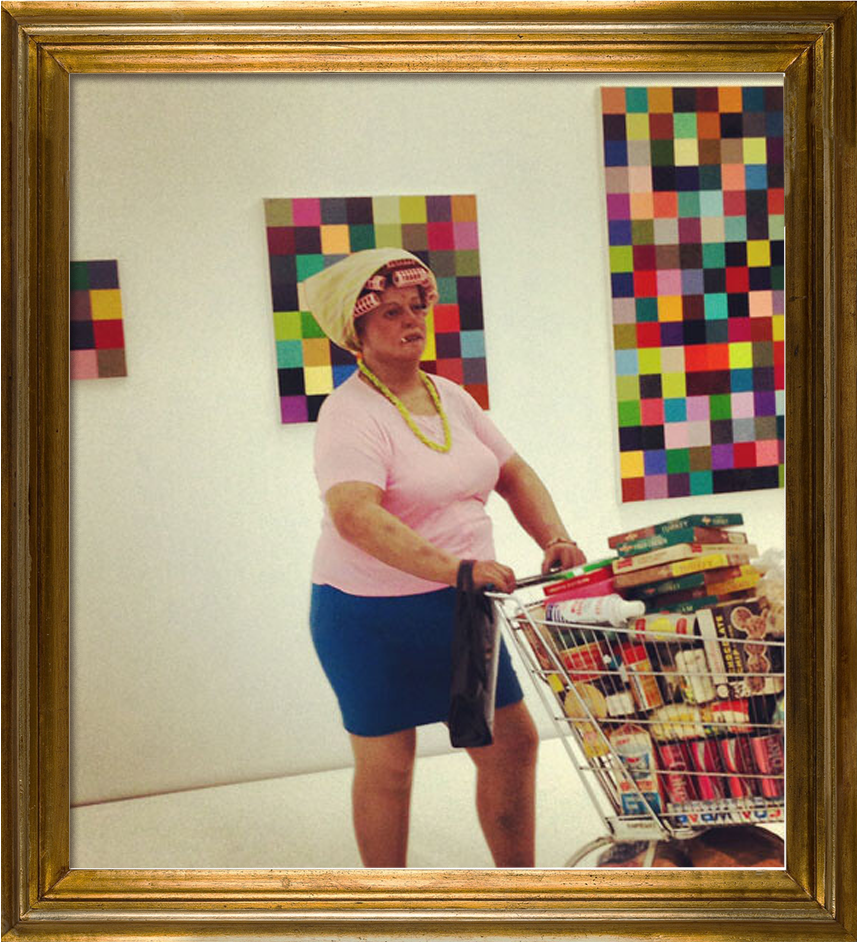
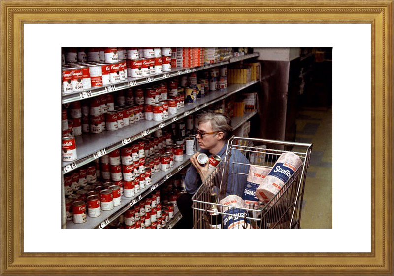
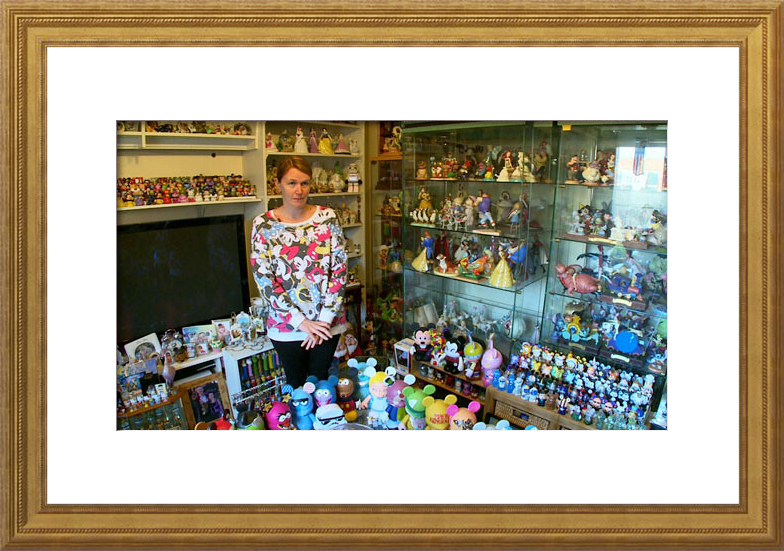

Douglas Coupland
November 2015
One of comedian George Carlin’s (1937–2008) seminal monologues was his 1986 riff on stuff: “That’s all the meaning of life is: trying to find a place to put your stuff. That’s all your house is, is a pile of stuff with a cover on it.” And to paraphrase: “Someone else’s stuff is actually shit, whereas your own shit isn’t shit at all, it’s stuff.” I’m made aware of this every time family members visit my house and see the art I collect. I see those very words etched onto their retinas, and I can imagine the conversations they’re having in the car driving away: “Do you think maybe all that art stuff he collects is a cry for help?”
“But it’s art shit. I think it might be worth something. It’s the art world. They have no rules. They can turn a piece of air into a million dollars if they want to.”
“Nah. Let’s not get too cosmic. It’s shit. Art shit.”
In April I wrote about links between hoarding and collecting in the FT Weekend magazine. The piece recoded art collecting and art fair behavior as possibly being subdued forms of hoarding. Basically: Where does collecting end and hoarding begin? One thing the piece didn’t ask was: What are the clinical roots of obsessive hoarding? One thing psychologists agree on is that hoarding is grounded in deep loss. First there needs to be a preexisting hoarding proclivity (not uncommon with our hunter-gatherer heritage.) If someone with a proclivity experiences a quick and catastrophic loss—often the death of a close relative, frequently in car accidents—one need wait approximately eighteen to twenty-four months before hoarding kicks in.
Reality TV shows on hoarding (A&E’s Hoarders; TLC’s Hoarding: Buried Alive) would have us believe that given dozens of helpers and a trained therapist, hoarders are often cured by the end of the TV episode. The truth, though, is that there’s really no cure for hoarding. Once it’s there, it’s pretty much there to stay. On these same TV shows, a voiceover regularly tells us that hoarding behavior is unsanitary and unsafe. This is correct. A few years back, a family friend—a big-game taxidermist who ended up making more money renting out mounted animals to TV and film shoots than he did with his trade—was killed in an electrical fire that began in his basement. He ran into his basement trying to put it out, got trapped, and quickly died of smoke inhalation. His retail storefront had always been immensely dense with hides, heads, and antlers. Nobody was surprised to learn his house had been equally as dense, but it was odd to think of his pack-ratting as being possibly medical.
One of the borderline ghoulish (and best) parts of watching TV shows about hoarding is seeing the expressions on the faces of hoarders once they realize that the intervention is for real. Until then it’s usually quite friendly, and in some cases hours can pass, and some deaccessioning progress is made, but then comes something—usually something utterly useless, and the hoarder chokes—it’s in the eyes: a) I may need that jar at some point down the road, and b) This intervention is over.
Needless to say, one feels a tingle of superiority knowing that one would never ever have one’s inner life come to a grinding halt over throwing out a twenty-seven-year-old unrinsed jar of peanut butter. But if it wasn’t that jar of Jif, what would it be that made someone—you—choke? And wait—how did a jar of Jif ever become the shorthand for life and its losses? How do objects triumph and become surrogates for life?
I think it was Bruno Bischofberger (1940– ) who said that the problem with the way Andy Warhol (1928–1987) collected art was that he always went for lots of medium-good stuff instead of getting the one or two truly good works. Warhol (the hoarder’s hoarder) would probably have agreed, but I doubt this insight would have affected his accumulation strategies.
A few years back I visited a friend of a friend in Portland with a pretty amazing collection of post-1960 American work. He went to the kitchen, and when he came back he saw me staring into the center of a really good crushed John Chamberlain (1927–2011). “What are you staring at?”
“What do you mean?”
He looked. “I think that’s as far in as the housekeeper’s arms can reach.”
I saw his face collapse. Thousands of dollars later I believe the piece was professionally cleaned with carbon tetrachloride dry-cleaning solution at immense cost. It reminded me of reading about Leo Castelli (1907–1999), who wasn’t allowed to have regular housekeeping staff in his apartment. In order to keep his insurance he had to have MFA students work as his housekeepers. I wonder if they’re now making MFA Roombas.
I think it’s perhaps also important to note that most curators almost never collect anything—yes, all those magazine spreads with the large empty white apartments—and if you ever ask a minimalist curator what they collect, they often make that pained face which is actually quite similar to the Jif jar lover upon the moment of possible surrender.
“But you don’t understand, I have no choice in this matter. You merely see an empty apartment, but for me this apartment is full of nothingness. That’s correct: I hoard space”
A friend of mine is a manufacturer and seller of modernist furniture. Five years ago he built a new showroom, and he was so in love with how empty it was, he kept it unused for a year as a private meditation space. On the other hand, most art dealers are deeply into all forms of collecting, as if our world is just a perpetual Wild West of shopping.
Designer Jonathan Adler (1966– ) says your house should be an antidepressant. I agree. And so does the art world. When a curator comes home and finds nothingness, they get a minimalist high. When a dealer comes home and finds five Ellsworth Kellys leaning against a wall, they’re also high in much the same way. Wikipedia tells us that “hoarding behavior is often severe because hoarders do not recognize it as a problem. It is much harder for behavioral therapy to successfully treat compulsive hoarders with poor insight about the disorder.” Art collectors, on the other hand, are seen as admirable and sexy. There’s little chance of them seeing themselves as in need of an intervention.
Some people collect art that’s purely political, or purely conflict-based, or highly pedigreed by theory, but I wonder if they’re just trying to sidestep out of the spotlight of the art economy’s vulgarity. But wait—did they magically win their collection in a card game? Did their collection arrive for free at their doorstep from Santa Claus? No, it had to be purchased with money, and it’s at this level where the dance between academia, museums, and collectors turns into a beyond-awkward junior high school prom.
The collecting of stuff—slightly out-of-the-ordinary stuff—is different now than it was in the twentieth century. eBay, Craigslist, and Etsy have gutted thrift and antique stores across North America of all their good stuff, and in Paris, the Marché aux Puces de Saint-Ouen is but a shadow of its former self. eBay itself, once groaning with low-hanging fruit being sold by the clueless, is now a suburban shopping center with the occasional semi-okay vintage thingy still floating around. In addition, too much globalized money and not enough places to stash it has made pretty much anything that is genuinely good far too pricey for the 99 percent. The good stuff is always gone, and all the stuff that’s left is shit.
On YouTube, you’ll find anti-hoarding videos that coach overcollectors to get rid of any object that doesn’t bring them joy. But perhaps this is contrary to human nature. In Australia last month I asked if I could visit that secret stone alcove where the last three remaining specimens of the world’s rarest tree are kept hidden.
“Why would you want to do that?”
That’s human collecting behavior.
I sometimes wonder if there’s a way to collect stuff without tapping into collecting’s dark, hoardy side. I got to thinking that if visual art is largely about space, then writing is largely about time—so then maybe people collect books differently than they do art.
Do they?
No, they don’t. Book hoarding tends to be just as intense as art hoarding, if not worse. It’s called “bibliomania,” and like generic hoarding, it is a recognized psychological problem. Bibliomania, though, is almost universally viewed as quirky and cute. Oh those booksellers sure are nutty! And they are nutty—pretty much all bookstore owners recognize that the profession brings with it a unique form of squirreliness. The best booksellers, the antiquarian sellers especially, are those sellers who genuinely don’t actually want to sell you the book. You have to audition for its ownership, and should they sell you the book, you can see the pain on their face as the cash machine bleeps.
Back in the early 2000s, my then agent, Eric in New York, was one of the first people I knew to overharvest music into an iTunes playlist. In 2002 it seemed amazing that a person could have 1.92 days (!) of music on their playlist. These days it’s not uncommon to find people with almost a solid year’s worth of playlisted music, if not far more.
Music is weird because it’s not really space, but it’s not quite time either. This got me thinking that okay, yes, visual art is mostly about space, whereas writing is largely about time. But what would a hybrid time/space creative form be? The answer is: film. I think the human relationship with time perception has altered quite a bit since 2000, and film seems to be one venue where this is fully evidenced. The internet has a tendency to shred attention spans while it fire-hoses insane amounts of film on humanity, making film hoarding as easy as newspaper hoarding was back in the 1950s. Even easier.
Other than actually dying, there is one thing that genuinely stops hoarding: the thanatophobia one feels at the thought of death approaching. One is forced to contemplate what will be written on one’s gravestone:
born
accumulated a bunch of cool stuff
died
This epitaph isn’t creepy, it’s just boring. So how do you manipulate your loot meaningfully while the clock ticks and ticks and ticks? With artists, dealing with stuff at the end of life becomes complicated. I find it interesting that, say, Constantin Brâncuşi (1876–1957) didn’t want to sell his work in his final years. He could afford not to, and he wanted to be surrounded by his own stuff. He wanted to live inside it, and it’s no coincidence that when he died he wanted his studio kept frozen in time at that moment. Reece Mews, the studio of Francis Bacon (1909–1992), with its tens of thousands of paint tubes, was the world’s most glamorous toxic heavy metals waste dump. And one can’t help but wonder about Andy Warhol, with his townhouse stuffed with unopened bags of candy, cookie jars, jewels, and Duane Reade concealer. Did he ever open up the doors of the rooms in his townhouse once they were full? Did he stop and stare at the doors, shiver, and then walk away?
In December of 2013 I saw a magnificent show at Stockholm’s Moderna Museet, “Turner, Monet Twombly: Later Paintings.” It featured works done in the final decade of the lives of John Turner (1873–1938), Claude Monet (1840–1926), and Cy Twombly (1928–2011). The paintings in the show were remarkable in and of themselves, yet what they collectively foregrounded was a sense of whiteness, a sense of glowing—an undeniable sense of the light that comes at the end of the tunnel. Overt content became less important, and the act of cognitive disassociation from the everyday world was palpable.
The works at the Museet depicted, in their way, anti-hoarding—a surrendering of life’s material trappings. It was a liberating show that gave the viewer peace. It let you know that maybe you should let go of many things in your life before its nearly over, when suddenly your stuff isn’t as important as it was cracked up to be.
An obvious question here at the end: Is it that art supercollectors, as well as bibliomaniacs, have experienced losses of a scope so great that they defy processing? Are these collectors merely sublimating misfiring grief via overcollecting? A reasonable enough question, but why limit it to collecting art or books? People collect anything and everything. And look at Darwin. Back in the days of caves, if someone close to you died or got killed, chances are your life was going to be much more difficult for the foreseeable future, so you’d better start gathering as many roots and berries as you can. Collecting as a response to sudden loss makes total sense. But also back then, if you somehow lived to thirty-five, you were the grand old man or dame of the cave, with very little time left on the clock. Divvying up your arrowheads and pelts made a lot of sense—and you best do it before your cave mate descendants plop you onto an iceberg and send you out into the floes.
I get the impression that collecting and hoarding seem to be about the loss of others, while philanthropy and deaccessioning are more about the impending loss of self.
Maybe collecting isn’t a sickness, and maybe hoarding is actually a valid impulse that, when viewed differently, might be fixable through redirection tactics. Humanity must be doing something right, because we’re still here—which means there’s obviously a sensible way to collect berries and roots; there’s probably also a sensible way to collect art and books. The people who freak me out the most are the people who don’t collect anything at all. I don’t mean minimalists. I mean people who simply don’t collect anything. You go to their houses or apartments and they have furniture and so forth but there’s nothing visible in aggregate: no bookshelves, no wall of framed family photos … there’s just one of everything. It’s shocking.
“You mean you don’t collect anything?”
“There must be something. Sugar packets? Hotel soaps? Fridge magnets? Pipe cleaners?”
“… Internet porn? Kitten videos?”
“What the hell is wrong with you!”
“If this was ten thousand years ago and we all lived in a cave, you’d be an absolutely terrible cave mate. You’d be useless at foraging for roots and berries, and if you went hunting you’d only have one arrowhead, so if you lost it, you’d starve.”
“Forget it. Let’s go gallery hopping right now.”
“That art stuff of his? It’s not stuff; it’s shit.”
“But it’s art shit. I think it might be worth something. It’s the art world. They have no rules. They can turn a piece of air into a million dollars if they want to.”
“So, maybe it’s not shit after all.”
“Nah. Let’s not get too cosmic. It’s shit. Art shit.”
In April I wrote about links between hoarding and collecting in the FT Weekend magazine. The piece recoded art collecting and art fair behavior as possibly being subdued forms of hoarding. Basically: Where does collecting end and hoarding begin? One thing the piece didn’t ask was: What are the clinical roots of obsessive hoarding? One thing psychologists agree on is that hoarding is grounded in deep loss. First there needs to be a preexisting hoarding proclivity (not uncommon with our hunter-gatherer heritage.) If someone with a proclivity experiences a quick and catastrophic loss—often the death of a close relative, frequently in car accidents—one need wait approximately eighteen to twenty-four months before hoarding kicks in.
Reality TV shows on hoarding (A&E’s Hoarders; TLC’s Hoarding: Buried Alive) would have us believe that given dozens of helpers and a trained therapist, hoarders are often cured by the end of the TV episode. The truth, though, is that there’s really no cure for hoarding. Once it’s there, it’s pretty much there to stay. On these same TV shows, a voiceover regularly tells us that hoarding behavior is unsanitary and unsafe. This is correct. A few years back, a family friend—a big-game taxidermist who ended up making more money renting out mounted animals to TV and film shoots than he did with his trade—was killed in an electrical fire that began in his basement. He ran into his basement trying to put it out, got trapped, and quickly died of smoke inhalation. His retail storefront had always been immensely dense with hides, heads, and antlers. Nobody was surprised to learn his house had been equally as dense, but it was odd to think of his pack-ratting as being possibly medical.
One of the borderline ghoulish (and best) parts of watching TV shows about hoarding is seeing the expressions on the faces of hoarders once they realize that the intervention is for real. Until then it’s usually quite friendly, and in some cases hours can pass, and some deaccessioning progress is made, but then comes something—usually something utterly useless, and the hoarder chokes—it’s in the eyes: a) I may need that jar at some point down the road, and b) This intervention is over.
Needless to say, one feels a tingle of superiority knowing that one would never ever have one’s inner life come to a grinding halt over throwing out a twenty-seven-year-old unrinsed jar of peanut butter. But if it wasn’t that jar of Jif, what would it be that made someone—you—choke? And wait—how did a jar of Jif ever become the shorthand for life and its losses? How do objects triumph and become surrogates for life?
I think it was Bruno Bischofberger (1940– ) who said that the problem with the way Andy Warhol (1928–1987) collected art was that he always went for lots of medium-good stuff instead of getting the one or two truly good works. Warhol (the hoarder’s hoarder) would probably have agreed, but I doubt this insight would have affected his accumulation strategies.
A few years back I visited a friend of a friend in Portland with a pretty amazing collection of post-1960 American work. He went to the kitchen, and when he came back he saw me staring into the center of a really good crushed John Chamberlain (1927–2011). “What are you staring at?”
“The dust.”
“What do you mean?”
“Inside this piece, there’s no dust on the outside bits, but it’s really thick in the middle.”
He looked. “I think that’s as far in as the housekeeper’s arms can reach.”
“Your housekeeper Windexes your art?”
I saw his face collapse. Thousands of dollars later I believe the piece was professionally cleaned with carbon tetrachloride dry-cleaning solution at immense cost. It reminded me of reading about Leo Castelli (1907–1999), who wasn’t allowed to have regular housekeeping staff in his apartment. In order to keep his insurance he had to have MFA students work as his housekeepers. I wonder if they’re now making MFA Roombas.
I think it’s perhaps also important to note that most curators almost never collect anything—yes, all those magazine spreads with the large empty white apartments—and if you ever ask a minimalist curator what they collect, they often make that pained face which is actually quite similar to the Jif jar lover upon the moment of possible surrender.
“But you don’t understand, I have no choice in this matter. You merely see an empty apartment, but for me this apartment is full of nothingness. That’s correct: I hoard space”
A friend of mine is a manufacturer and seller of modernist furniture. Five years ago he built a new showroom, and he was so in love with how empty it was, he kept it unused for a year as a private meditation space. On the other hand, most art dealers are deeply into all forms of collecting, as if our world is just a perpetual Wild West of shopping.
Designer Jonathan Adler (1966– ) says your house should be an antidepressant. I agree. And so does the art world. When a curator comes home and finds nothingness, they get a minimalist high. When a dealer comes home and finds five Ellsworth Kellys leaning against a wall, they’re also high in much the same way. Wikipedia tells us that “hoarding behavior is often severe because hoarders do not recognize it as a problem. It is much harder for behavioral therapy to successfully treat compulsive hoarders with poor insight about the disorder.” Art collectors, on the other hand, are seen as admirable and sexy. There’s little chance of them seeing themselves as in need of an intervention.
Some people collect art that’s purely political, or purely conflict-based, or highly pedigreed by theory, but I wonder if they’re just trying to sidestep out of the spotlight of the art economy’s vulgarity. But wait—did they magically win their collection in a card game? Did their collection arrive for free at their doorstep from Santa Claus? No, it had to be purchased with money, and it’s at this level where the dance between academia, museums, and collectors turns into a beyond-awkward junior high school prom.
The collecting of stuff—slightly out-of-the-ordinary stuff—is different now than it was in the twentieth century. eBay, Craigslist, and Etsy have gutted thrift and antique stores across North America of all their good stuff, and in Paris, the Marché aux Puces de Saint-Ouen is but a shadow of its former self. eBay itself, once groaning with low-hanging fruit being sold by the clueless, is now a suburban shopping center with the occasional semi-okay vintage thingy still floating around. In addition, too much globalized money and not enough places to stash it has made pretty much anything that is genuinely good far too pricey for the 99 percent. The good stuff is always gone, and all the stuff that’s left is shit.
On YouTube, you’ll find anti-hoarding videos that coach overcollectors to get rid of any object that doesn’t bring them joy. But perhaps this is contrary to human nature. In Australia last month I asked if I could visit that secret stone alcove where the last three remaining specimens of the world’s rarest tree are kept hidden.
“Why would you want to do that?”
“I want to get one before someone else gets it.”
That’s human collecting behavior.
I sometimes wonder if there’s a way to collect stuff without tapping into collecting’s dark, hoardy side. I got to thinking that if visual art is largely about space, then writing is largely about time—so then maybe people collect books differently than they do art.
Do they?
No, they don’t. Book hoarding tends to be just as intense as art hoarding, if not worse. It’s called “bibliomania,” and like generic hoarding, it is a recognized psychological problem. Bibliomania, though, is almost universally viewed as quirky and cute. Oh those booksellers sure are nutty! And they are nutty—pretty much all bookstore owners recognize that the profession brings with it a unique form of squirreliness. The best booksellers, the antiquarian sellers especially, are those sellers who genuinely don’t actually want to sell you the book. You have to audition for its ownership, and should they sell you the book, you can see the pain on their face as the cash machine bleeps.
Back in the early 2000s, my then agent, Eric in New York, was one of the first people I knew to overharvest music into an iTunes playlist. In 2002 it seemed amazing that a person could have 1.92 days (!) of music on their playlist. These days it’s not uncommon to find people with almost a solid year’s worth of playlisted music, if not far more.
Music is weird because it’s not really space, but it’s not quite time either. This got me thinking that okay, yes, visual art is mostly about space, whereas writing is largely about time. But what would a hybrid time/space creative form be? The answer is: film. I think the human relationship with time perception has altered quite a bit since 2000, and film seems to be one venue where this is fully evidenced. The internet has a tendency to shred attention spans while it fire-hoses insane amounts of film on humanity, making film hoarding as easy as newspaper hoarding was back in the 1950s. Even easier.
Other than actually dying, there is one thing that genuinely stops hoarding: the thanatophobia one feels at the thought of death approaching. One is forced to contemplate what will be written on one’s gravestone:
born
accumulated a bunch of cool stuff
died
This epitaph isn’t creepy, it’s just boring. So how do you manipulate your loot meaningfully while the clock ticks and ticks and ticks? With artists, dealing with stuff at the end of life becomes complicated. I find it interesting that, say, Constantin Brâncuşi (1876–1957) didn’t want to sell his work in his final years. He could afford not to, and he wanted to be surrounded by his own stuff. He wanted to live inside it, and it’s no coincidence that when he died he wanted his studio kept frozen in time at that moment. Reece Mews, the studio of Francis Bacon (1909–1992), with its tens of thousands of paint tubes, was the world’s most glamorous toxic heavy metals waste dump. And one can’t help but wonder about Andy Warhol, with his townhouse stuffed with unopened bags of candy, cookie jars, jewels, and Duane Reade concealer. Did he ever open up the doors of the rooms in his townhouse once they were full? Did he stop and stare at the doors, shiver, and then walk away?
In December of 2013 I saw a magnificent show at Stockholm’s Moderna Museet, “Turner, Monet Twombly: Later Paintings.” It featured works done in the final decade of the lives of John Turner (1873–1938), Claude Monet (1840–1926), and Cy Twombly (1928–2011). The paintings in the show were remarkable in and of themselves, yet what they collectively foregrounded was a sense of whiteness, a sense of glowing—an undeniable sense of the light that comes at the end of the tunnel. Overt content became less important, and the act of cognitive disassociation from the everyday world was palpable.
The works at the Museet depicted, in their way, anti-hoarding—a surrendering of life’s material trappings. It was a liberating show that gave the viewer peace. It let you know that maybe you should let go of many things in your life before its nearly over, when suddenly your stuff isn’t as important as it was cracked up to be.
An obvious question here at the end: Is it that art supercollectors, as well as bibliomaniacs, have experienced losses of a scope so great that they defy processing? Are these collectors merely sublimating misfiring grief via overcollecting? A reasonable enough question, but why limit it to collecting art or books? People collect anything and everything. And look at Darwin. Back in the days of caves, if someone close to you died or got killed, chances are your life was going to be much more difficult for the foreseeable future, so you’d better start gathering as many roots and berries as you can. Collecting as a response to sudden loss makes total sense. But also back then, if you somehow lived to thirty-five, you were the grand old man or dame of the cave, with very little time left on the clock. Divvying up your arrowheads and pelts made a lot of sense—and you best do it before your cave mate descendants plop you onto an iceberg and send you out into the floes.
I get the impression that collecting and hoarding seem to be about the loss of others, while philanthropy and deaccessioning are more about the impending loss of self.
Maybe collecting isn’t a sickness, and maybe hoarding is actually a valid impulse that, when viewed differently, might be fixable through redirection tactics. Humanity must be doing something right, because we’re still here—which means there’s obviously a sensible way to collect berries and roots; there’s probably also a sensible way to collect art and books. The people who freak me out the most are the people who don’t collect anything at all. I don’t mean minimalists. I mean people who simply don’t collect anything. You go to their houses or apartments and they have furniture and so forth but there’s nothing visible in aggregate: no bookshelves, no wall of framed family photos … there’s just one of everything. It’s shocking.
“You mean you don’t collect anything?”
"No."
“There must be something. Sugar packets? Hotel soaps? Fridge magnets? Pipe cleaners?”
"No."
“… Internet porn? Kitten videos?”
"No."
“What the hell is wrong with you!”
“What do you mean?”
“If this was ten thousand years ago and we all lived in a cave, you’d be an absolutely terrible cave mate. You’d be useless at foraging for roots and berries, and if you went hunting you’d only have one arrowhead, so if you lost it, you’d starve.”
“Where is this coming from, Doug?”
“Forget it. Let’s go gallery hopping right now.”

Duane Hanson, Supermarket Lady, 1970.

Klaus Biesenbach poses for German GQ in his New York apartment.

Andy Warhol shops at Gristedes supermarket near his 47th street Silver Factory in New York City in 1965.

In Hoarding: Behind Closed Doors, Disney Claire poses by her collection of Disney toys.